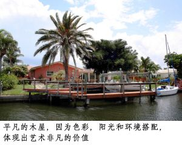

设计艺术=商业=社会责任
问：如何管理员工？
答：每个螺丝都有特定位置，不要指望它放在哪里都合适，但在特定位置之前，还得磨合训练。训练是极其花费时间、金钱和精力的。
有些人不瞭解自己的特性，不乐意你为他放置的位置，而他想做的却是与其个性、特质完全不合的。所有人的失败就在于不认识自己，又不顺从有识之士的指导与安排。这种人你必须硬下心来放弃！否则时间与纠缠会耗尽你全部的心力，没有任何工作效率可言。
朋友Sue个性热情开朗，第一次见到她就知道她极其能干聪明，深交下去，得知她之前在一家大规模的电脑公司工作十几年，从基层做起，一直到担任副总裁要职，管理数千员工。她说什么样的员工都见过，千奇百怪。笑说自己原本也不知道自己这么“坏”。手下的老美员工开玩笑时告诉她：她一拍桌子，所有人都变成在桌子下面……我也看见过太温和的主管、领导，压不住手下。可以说，没有一个企业强人不是急性子的，被人“骂”又何妨，否则如何带领员工进入“迦南美地”？
问：你如何看待女强人？
答：我真是不喜欢“女强人”这个词。聪明能干又有魄力的女人也是人，也很有女人味，也很讲究生活。Sue是我很喜欢的一位朋友，我很欣赏他们夫妻很看得开。Sue这几年不工作（虽然她还很年轻）老公是注册会计师，但每年只上3个月的班，平时一个负责整理院子，整得像艺术品似的。（John本来就很有艺术品位），Sue则醉心於烹调和做点心，极其讲究，极其沉醉，连带我们常常有口福。“钱够用就好”。如此放得下，看得开，才真正是个聪明女人。
问：我在一家小公司做一阵子，现想依照原老板模式，自己出来创业，你有何建议？
答：同样是Sue，我问她，你如此聪明能干，又掌握公司全套模式与管理，可曾有过自己出来创业的念头？Sue说创业可没有那么容易，虽然为人工作很辛苦，全家三餐吃外卖，半夜还要和海外通讯……但当老板要承担的压力与责任重得多，不是外人可以想像的……
有数据：百分之多少的公司在头一年倒闭，在第三、五、七年又再倒掉一些，余下的公司百分之九十几在第十年之前关闭。
创业需要天时地利人和，但最最重要的是你是否有商业天分？老一辈企业家靠的是商业天分起家，第二、三代靠的是MBA学历在维持或发展。有维持发展的能力，不见得有创业能力。
瞭解你的人格特质，不要随风起舞。我见到很多失败的人生都是过高估计自己，错误评估环境，或根本就不瞭解自己。

问：我认为能从艺术当中赚钱的人真是不容易？
答：我倒认为艺术就是商业。例如，现在的人买衣服不是为了遮体御寒而已，而是在买设计；去餐厅不是去吃饭而已，而是去吃“气氛”。气氛不仅仅指室内设计，还包括菜色设计与定位，功能性、盘子、行销等等设计……
问：那么为什么艺术家都受穷？
答：因为有艺术眼光的商人不多，有商业眼界的艺术家更少。设计与商业眼光都要极其锐利，很难！
问：我是学商的，有兴趣做和艺术有关的生意……
答：那么你得先懂艺术。
问：我听从刘老师的建议，先学艺术再学商业，是否就能顺利在艺术商业上发展？
答：不是学什么就有什么才能。你的专业只是让你有那方面的知识，艺术和商业都是需要天分的行业。就如同烹调，我认为是需要热情和天分的。喜爱烹调的人都有艺术品位。我没有烹调的热情与天分，但很尊重会煮菜做糕点的人，认为他们是艺术家中最高格调的一种：又实用又有品位。这是我认为应该追求的艺术人生。
问：如果你去艺术之都巴黎学习，你会学什么？
答：我不会学绘画，比绘画更实用的艺术——做面包！如果经济大衰退，比较不用担心的人是有块地，至少可以种菜养活自己。对于艺术，我更在乎的是实用性、便利性，而非仅仅是外在美观，真正为人们提供帮助。通过合理、环保的设计，节省地球的资源与能源，进而影响社会与政治，推动人类向更合理的美好生活迈进。某方面，我更像一个社会活动实验者和理想推行者。
一个设计师，应该具有社会责任意识：政治家的眼界、企业家的动手能力、公民的立马当先，最后才是设计师的合理性和先主性。
问：为什么你们把事情讲得很复杂？
答：任何事物的背后一定有隐藏的规律和社会责任。除非你不想探究或不懂得思考。
莎伦画院教出全世界最好的儿童青少年绘画美学，是为了以此调整训练学生从小到大建立美好的个性和人生目标。我们的美术设计目标也是为了改变世界和使人们的生活更为美好。简单来说：设计艺术（与人生规划）通过商业形式，造福他人，进而参与社会的改造。
问：做生意不计赚钱，怎么可能？
答：当你能真正为他人提供帮助时，你不想赚钱都不可能。我们总是想尽办法，研究如何对学生最好，最能帮助他们提高、进步。
问：如果有人不领情怎么办？
答：这种情况一定有。不必要在乎別人说什么，怎么看你。做上帝看为喜悅的。当我在回答今天的问题的时候，听到一则坏消息，我的恩师师母，从住家下楼买东西，被送外卖的车撞著，去世……恩师秦长安教授是我的启蒙老师，把我带入视觉艺术领域，此生他所受的嫉妒、排挤和所受的拥戴、崇敬一样多。就学时，我也和大家一样常捱他的“臭骂”，平时忠厚老实巴交、不善言语、笑容满面、和蔼可亲，上起课来竟然如此“兇狠”。虽然学校里派系分明，一心埋头做学问的秦老师是属于“靠边站”的一拨，而且是人家最大的眼中钉。但学生都知道他是最好的老师，也是全国知名教授，以能上他的课为荣为傲！只要是他教的班，每天清晨，大家都得晨练，排队跑步出校外，然后写生……这些都不在教学范围内，皆是他自己对学生的要求。平时吊儿郎当的学生，一上他的课，没有人敢偷懒，都变了样……
师母个性豪爽，待学生如己出，对秦老师照顾周到，从不像他人因先生受排挤而瞧不起先生。看得出来师母眼中的秦老师真真正正活出其敬重与尊贵！秦老师永远乐呵呵，从不曾有任何抱怨怨言，只求学问与做人的原则,不求钱财名誉。家中除了书只有画，秦老师在家中时永远在书房的书堆里。我听父亲说，秦老师其实出身名门，父亲是国大代表……。在美国二十几年，每当我沉心画画时，脑中总出现秦老师的影子。无论我多么有天分，永远也不可能画出恩师十分之一水準的画来。也常常想到他要我们做到的，其实我永远也没有真正达到他的要求。而他从来不说教的为人处世，则深刻我的心中。师兄宏才遗传父母的厚道、诚恳、开朗，待人肝胆相照，也给我非常多的关照。每次近乡却是情却，不知道怎样去面对他们。秦老师病逝后很久，我竟然才知晓。两、三年前回大陆，去看了师母，客厅里师兄为秦老师所拍的放大艺术照，照片上秦老师音容笑貌依旧，喜乐之情永远跃然脸上。我才知道，心底里一份最敬仰的感情，是自己一直不敢去碰触的。
一个人对所有无亲无故者全然真心的付出，绝大部分人都能用心领受到。
我后来才听说老师和师母都是基督徒。
如果没有恩师就没有我的今天和盛名远播的莎伦画院，也没有因此改变命运的许许多多优秀的美国设计师与敬畏上帝、心存感恩的青年……
这让我想起圣经的话；“一粒麦子不落在地里死了，仍旧是一粒。若是死了，就结出许多籽粒来。”
此时，秦老师和师母必在天国同享荣耀。
(7/8/2012)